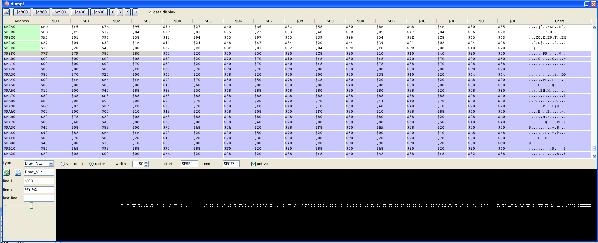

PrintString
The vectrex BIOS stores a raster "image" of all characters supported, this can be seen e.g. by using dumpi:

Dumpi
Each char is represented by 7 bytes, each byte repressents one row of the character and each bit position one column. So the "pixel" size of one char is 8*7 (height * width).
If a string is to be printed, the BIOS loads the address of the bitmap, examines each character of the string and uses the char values as a lookup reference into the raster image and outputs in one long line the first row of all characters of the string.
Of each char (in the string) the first byte is read and the bits which are set are output with the "light switched on" and bits which are not set are output with the "light switched off".
Actually each line of a String output is one long line which changes its "pattern"-byte continually along the way. Lets call this thing a "string-line" for easier reference.
All raster outputs on a vectrex are more or less done exactly that way.
There is virtually no way the above explained can be made more efficient. To output one byte of (raster) data you need one full "shift cycle". One shift cycle takes 18 (CPU) cylces. You can finish that sooner - than you did not output 8 bits, you can finish that later, but you will not output more bits. So - exactly 18 cycles is what it takes. Fullstop!
The only way one can change the output of "complete" strings is to change the things which are done in between the output of each string-line.
Take a look at the following image, here I show three different ways what can be done:
PrintString
This I call "uni directional output", in short:
output one string line
go a little bit down
go back to the start of the line
do the above 7 times
This I call "bi directional output", in short:
output one string line
go down a little bit
while going back output an "inverse string line"
do above for all 7 lines
This I call "synced output", in short:
output one string line
zero the integrators, and wait
reposition beam to start and move down a little
do the above 7 times
uni directional output
Speed - medium (shown example 10486 cycles for "Hello world this is - a wonderfull day")
vulnerable to vectrex drift, the longer the text the more "italic" it gets
bi directional output
Speed - fast (shown example 6209 cycles for "Hello world this is a wonderfull day")
vulnerable to vectrex drift, but not as much as "uni", tends to be a bit more "grizzly"
reports, that it does not work on all vectri (although I have not seen that in real live yet)
synced output
Speed - slow (shown example 12443 cycles for "Hello world this is a wonderfull day")
not! vulnerable to vectrex drift
Example routines can be found in codi:
codelib/Snippets/Malban/Print_Tests/